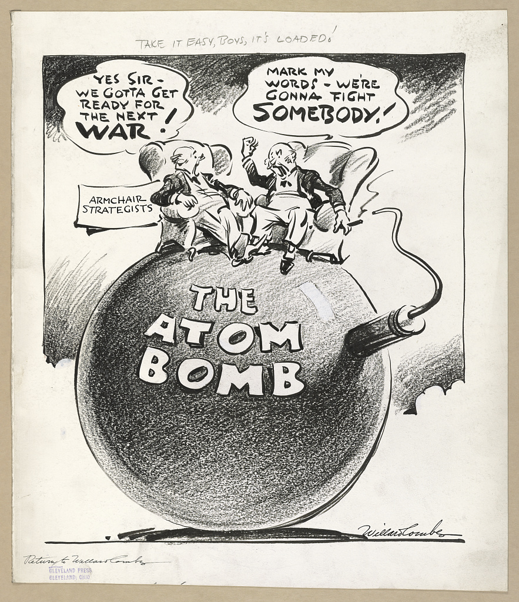

The Doctrine Gap
Balancing National Security Commitments and Capabilities
Library of Congress Catalog →
Political-Military Integration & Strategy
The Doctrine Gap builds on existing analyses of changes in American national security strategy by focusing additionally on the responses of the United States military services to those changes. Its research combines a history of Cold War American national security strategy and military force development with an analysis of how civilians and military professionals pursue the objective of political-military integration—the iterative process of matching military capabilities with strategic objectives. It involves the civilian-driven process of strategy-making, the military-driven process of force development, and the interaction of those two processes as they progress.
Historical Commitment-Capability Gaps
Based on a historical analysis of how the United States confronted political-military commitment-capability gaps throughout the Cold War, The Doctrine Gap explains how civilians and military professionals interpreted changes in the international security environment, evaluated political-military solutions for the challenges that they perceived, and interacted with one another to develop and implement those solutions as national security policy. This project uses the unique historical period of the Cold War to explain the relationship between changes in national security strategy and military force development, the consequences of shifts in strategy for individual military services, how those services respond to these shifts, and the integration of a service’s force design and combat development policies with changing strategic circumstances.
Lessons for Great Power Competition
Using the lessons drawn from the The Doctrine Gap's historical analysis of political-military integration during the Cold War, I draw conclusions about the United States’ ability to succeed in long-term political-military competition with its great power rivals in the near- to mid-term.
Explore Contemporary Policy Work
In addition to historical monograph scholarship, Dr. Haelig produces active policy research and commentary as a Defense Program Fellow at CNAS.